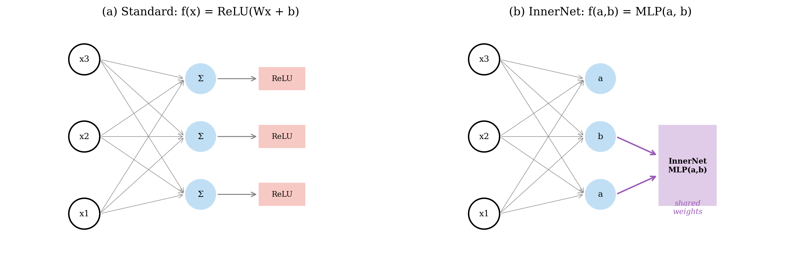
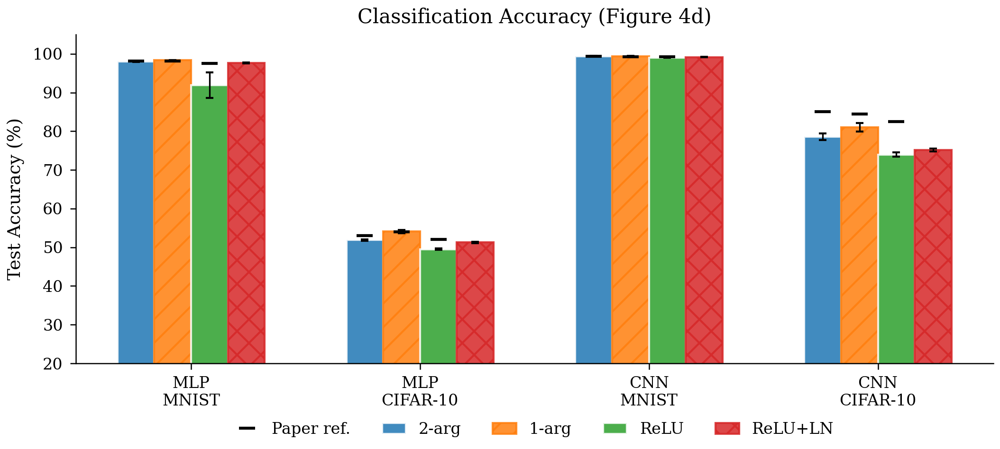
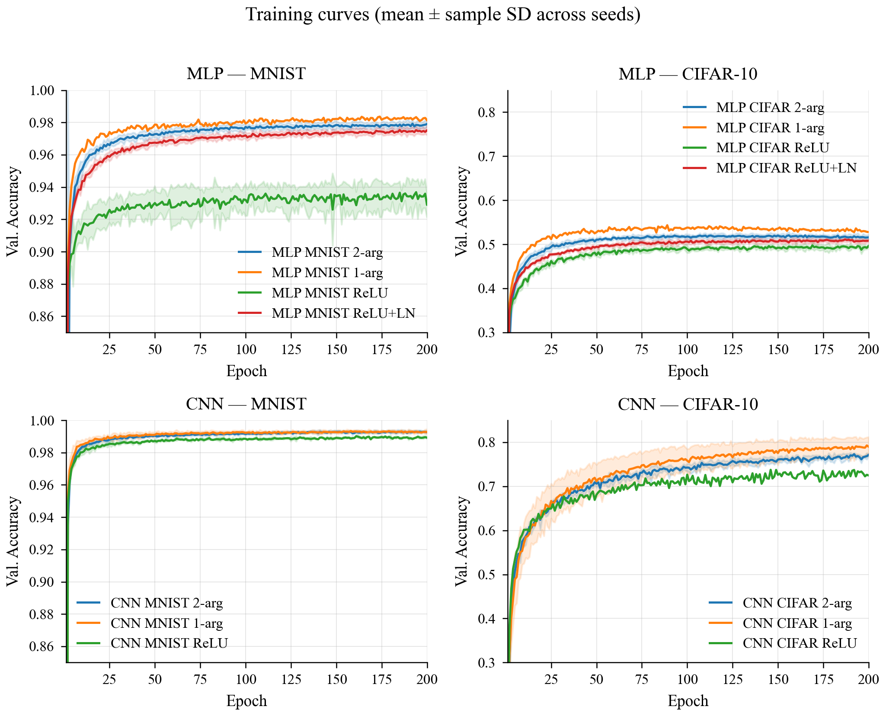
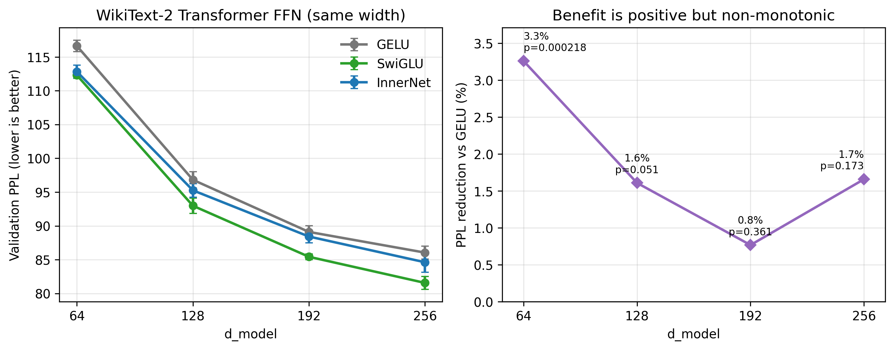
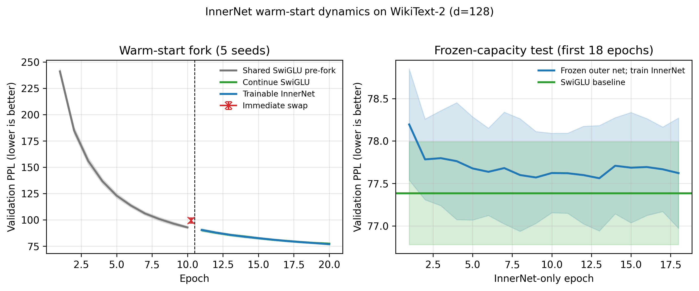
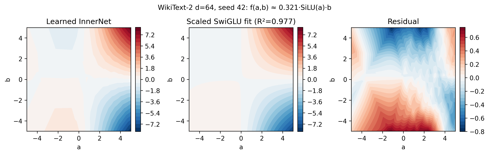
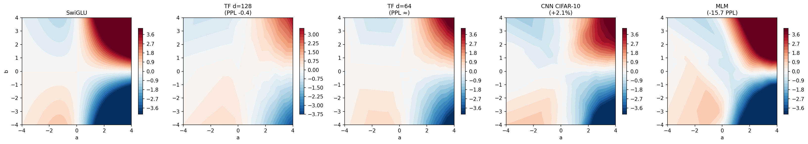
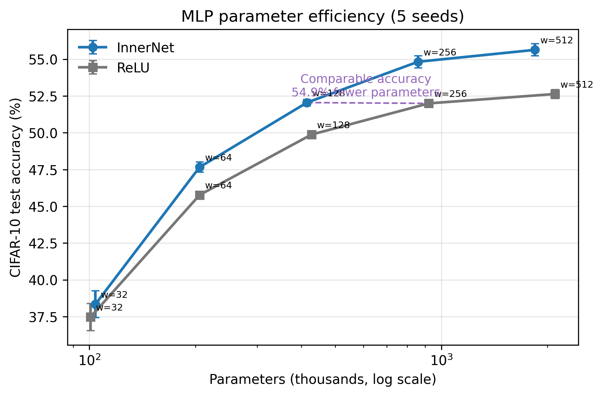

用可学习二元单元发现神经网络的局部计算结构
摘要
人工神经网络通常先对输入求加权和，再施加预先指定的一元激活函数。这种设计高效且稳定，却把神经元内部的特征交互规则固定在架构设计阶段。受皮层神经元树突区室对多路输入进行非线性整合的现象启发，本文研究共享的两输入小网络 InnerNet，使局部算子 fθ(a,b) 能随任务共同学习。跨图像分类、自编码、语言建模、循环记忆和强化学习的实验表明，InnerNet 在小型和中型模型中能够改善性能或收敛，但它的主要价值并非直接替代现有激活函数。更关键的结果是，经过训练的二维函数可以被可视化、拟合和干预，从而用于辨识外围网络所偏好的局部计算结构。一组跨宿主算子、初始化和训练方式的因果实验进一步显示：当外围网络由双线性算子训练得到时，InnerNet 稳定恢复乘法结构；当外围网络由 SwiGLU 训练得到时，InnerNet 稳定恢复 SwiGLU 类结构。最终形态由外围网络所在的优化区域决定，而非由 InnerNet 的初始函数决定。与此同时，从头训练的高容量 InnerNet 往往难以达到手工算子的性能；先获得有效的外围网络，再进行局部结构搜索，可显著缓解这一问题。我们据此提出一种工作流：用可学习二元单元探索局部计算规则，再将稳定结构提炼为简单算子。该方法为神经科学启发的结构假设、可解释的架构搜索和高效模型设计提供了同一个实验接口。
1 引言
现代神经网络中的神经元通常被简化为线性变换与标量非线性的组合。ReLU、GELU 和 SiLU 等函数只接收一个聚合后的标量，因此不同输入通路之间如何相互促进、抑制或门控，主要由网络的宏观连线事先决定。真实神经元则具有更丰富的局部结构。基底树突、顶端树突及其分支可以接收来源不同的输入，并在细胞体放电之前完成非线性整合。人类皮层神经元中的树突事件甚至表现出 XOR 类计算特征 [1,2]。这些观察提示，神经元内部的多输入非线性本身可以构成一种有意义的计算基元。
Yoon 等人据此提出两参数激活函数 [1]。他们用一个共享的小型多层感知机替代固定激活函数，使每个神经元对两路线性投影进行联合变换。该模型在 MNIST 和 CIFAR-10 的 MLP 与 CNN 上学到软 XOR 或门控形态，并在若干设置中获得更快的学习和更好的鲁棒性。这个结果建立了生物学动机与机器学习算子之间的联系，但也留下了三个问题。第一，二元非线性离开简单前馈分类后是否仍然有用。第二，训练得到的函数究竟反映任务需要、初始化偏置，还是外围网络已经形成的表示。第三，高容量小网络带来的计算开销能否换成一个更简单的部署结构。
本文把 InnerNet 视为一个可微的局部结构探索器。训练期间，它保留足够大的函数空间，使优化能够在乘法、门控、软 XOR 和其他二维变换之间移动。训练之后，其输入维度只有二，因此可以直接绘制函数表面，并用候选闭式算子进行拟合。与搜索离散算子集合的方法相比，这一过程不要求提前穷举所有组合规则；与直接使用一个大型黑盒模块相比，共享的二维函数又保留了可检查性。
我们的实验得到三个主要结论。首先，二元单元的收益具有明显的架构和规模依赖性：它在多种小型和中型任务中有效，但从头训练的大模型常受优化困难和运行成本限制。其次，InnerNet 的容量足以表示强手工算子，真正的瓶颈是如何进入有效的优化区域。最后，学到的局部算子并不存在脱离外围网络的唯一最优形态；它会稳定恢复与当前表示和优化区域相容的交互规则。这使 InnerNet 更适合作为局部架构发现与假设检验工具，而非一个需要永久保留在部署模型中的通用激活函数。

图 1｜共享二元 InnerNet。 标准单元对单个加权和施加固定非线性。InnerNet 接收两路线性投影，并用共享的小型网络计算 fθ(a,b)。 参数共享使同一个局部计算规则在多个神经元和层中重复出现，也使训练后的二维函数能够被单独分析。
2 结果
2.1 二元局部计算在经典分类任务上稳定有效
我们首先复现原论文的 MLP 与 CNN 分类设置。二参数模型在四个主要任务上均优于对应 ReLU 基线，其中提升在容量受限的 MLP 和 CIFAR-10 CNN 上最明显。CNN CIFAR-10 中，二参数模型达到 78.57±0.74%，ReLU 为 73.99±0.49%；加入相同位置的 LayerNorm 后，ReLU 达到 75.14±0.34%，仍低于二参数模型。PReLU 和 SiLU 也不能解释这一差距，说明收益并非只来自可学习斜率、平滑性或归一化。
| 任务 | 二参数 InnerNet | ReLU | 绝对差值 |
|---|---|---|---|
| MLP，MNIST | 98.0% | 91.9% | +6.1 |
| MLP，CIFAR-10 | 52.1% | 49.5% | +2.6 |
| CNN，MNIST | 99.41±0.04% | 99.02±0.03% | +0.39 |
| CNN，CIFAR-10 | 78.57±0.74% | 73.99±0.49% | +4.58 |
学习曲线显示，二参数模型的优势通常在训练早期出现。在多个有效设置中，它达到给定性能阈值所需的 epoch 数约为基线的四分之一到二分之一。这个现象与原论文报告的快速学习一致。它说明多输入局部单元能够提供更合适的早期特征组合方式，但不意味着二参数形式在每个数据集上都优于一参数可学习激活。例如，FashionMNIST 和 SVHN 中的一参数版本略高于二参数版本。由此可见，分类结果支持可学习局部结构的价值，却不足以单独证明某一种二元形式普遍最优。

图 2a｜原论文结果复核。 三项任务在绝对水平和相对方向上基本复现；CNN CIFAR-10 保留了相对优势，但绝对精度低于原论文曲线的图读值。

图 2b｜多随机种子训练曲线。 阴影表示跨种子离散程度。二参数模型的主要优势通常在优化早期形成。
2.2 收益延伸到重建、语言建模和部分决策任务
为检验这一局部计算形式是否只适用于简单图像分类，我们把 InnerNet 放入自编码器、Transformer 前馈层、LSTM 和强化学习策略网络。自编码器上的结果最稳定：MNIST、FashionMNIST 和 CIFAR-10 的重建误差分别下降 43%、12% 和 23%。在 WikiText-2 的小型 Transformer 中，InnerNet 在四个模型宽度上均优于 GELU；在 d=128 时，测试困惑度从 96.82±1.19 降至 95.26±1.00。LSTM 上的改善较小，困惑度从 104.38±0.75 降至 103.41±0.83。强化学习中，Acrobot 显示出明确收益，LunarLander 则与 ReLU 持平。
| 任务 | 固定基线 | InnerNet | 结果 |
|---|---|---|---|
| MNIST 自编码 | 0.0068 MSE | 0.0039 MSE | 误差下降 43% |
| CIFAR-10 自编码 | 0.0105 MSE | 0.0081 MSE | 误差下降 23% |
| Transformer，WikiText-2，d=128 | 96.82±1.19 PPL，GELU | 95.26±1.00 PPL | 困惑度下降 1.6% |
| LSTM，WikiText-2 | 104.38±0.75 PPL | 103.41±0.83 PPL | 困惑度下降 0.9% |
| PPO，Acrobot | ReLU 基线 | 高 21.7 return | 配对检验 p=0.0036 |
这些结果给出了比原始 MLP 与 CNN 更广的经验范围，同时也揭示了边界。Transformer 中，InnerNet 在 d=64,128,192,256 的同宽度比较中均优于 GELU，但没有超过手工设计的 SwiGLU。规模继续增大到 GPT 设置后，InnerNet 从头训练反而落后。模型越大，灵活局部函数带来的优化负担越难由固定训练预算消化。

图 3｜Transformer 规模与测试困惑度。 InnerNet 在四个 WikiText-2 宽度上优于 GELU，但始终落后于 SwiGLU。更大的 GPT 设置出现反转，表明高容量局部算子的主要限制来自优化和训练成本。
2.3 InnerNet 具有足够的表示能力，困难主要来自优化路径
SwiGLU 属于 InnerNet 可以近似表示的二维函数族。如果性能差距来自容量不足，那么在固定外围网络时，InnerNet 也无法恢复 SwiGLU 的性能。实验结果与此相反。在 WikiText-2 d=128 模型中，我们先训练 SwiGLU 网络，再把局部算子替换为 InnerNet。冻结外围网络、只训练 InnerNet 时，两者最终困惑度均为 77.38；允许外围网络与 InnerNet 联合调整时，InnerNet 在五个种子上的平均困惑度为 76.85，继续训练 SwiGLU 的分支为 77.04。
同样的 warm-start 协议扩展到 11 个架构与任务后，InnerNet 在 10 个设置中优于或持平于 SwiGLU，LSTM 是唯一明确落后的设置。相反，当所有参数从头共同训练时，不同初始化的 InnerNet 通常比 SwiGLU 差 1 到 3 个困惑度点。两组实验共同说明，高容量二元函数并不缺少表示能力；它需要外围网络先形成有效表示，或者需要一个能够把系统带入有效区域的结构化起点。

图 4｜优化路径与容量分离。 左图在共同的 SwiGLU 预训练后分叉，分别继续训练 SwiGLU 或改用可训练 InnerNet。右图冻结外围网络，只优化 InnerNet。InnerNet 可以保持或略微改善已有解，说明从头训练的差距主要是优化问题。
2.4 局部算子由外围网络的优化区域决定
为区分任务、初始化和外围网络状态的作用，我们构造了两个宿主网络。第一个宿主使用固定双线性算子 a·b 完成训练，第二个宿主使用固定 SwiGLU 算子完成训练。随后用 InnerNet 替换宿主中的固定算子，并系统改变 InnerNet 的初始函数和训练方式。这里的一个“条件”指一个确定的宿主类型、训练方式、InnerNet 初始化和随机种子的组合。
| 宿主网络 | InnerNet 训练方式 | 初始函数 | 随机种子 | 条件数 | 最终函数 |
|---|---|---|---|---|---|
| 双线性宿主 | 联合训练或冻结外围网络 | 随机、乘法 | 5 | 20 | 20/20 恢复乘法，R²=0.9976 至 0.9993 |
| SwiGLU 宿主 | 联合训练 | 随机、恒等、乘法、SwiGLU | 5 | 20 | 20/20 恢复 SwiGLU 类形态，R²=0.9853 至 0.9912 |
四十个条件形成了清晰的分离。相同的 InnerNet 初始化进入不同宿主后会得到不同的函数，而同一宿主中的不同初始化会收敛到同一类函数。因此，最终算子并不是 InnerNet 参数化本身产生的固定吸引子。外围网络已经形成的表示、尺度和梯度场共同限定了可行的局部计算。InnerNet 在这个条件空间内完成连续搜索，并恢复与当前网络解相容的高性能结构。
这一结果改变了可学习激活的解释方式。训练得到的二维表面不应被看作脱离网络上下文的全局最优激活函数。它更接近一次局部系统辨识：给定一个已经工作的网络，允许局部计算规则变形，再读取优化保留下来的结构。该过程可以用于检验某个手工算子是否稳定、发现它附近的改进方向，也可以比较不同任务和层是否需要不同的交互形式。

图 5｜二维函数的结构读取。 一个 Transformer 检查点中的 InnerNet 可由缩放 SwiGLU 项解释 97.7% 的方差。单个表面只提供实例证据；跨宿主、跨初始化和跨种子的因果矩阵给出了更强的结构结论。
2.5 探针容量很快进入平台
如果 InnerNet 的作用是探索局部结构，它不需要无限增大。我们在固定 WikiText-2 d=128 设置中只改变 InnerNet 隐藏宽度。宽度从 8 增加到 16 和 32 时，平均困惑度逐步下降；继续增加到 64 只改善 0.17 PPL。四档的 Friedman 检验为 p=0.392， 没有检测到总体宽度效应。与此同时，宽度 64 的训练时间为宽度 8 的 4.86 倍。
| InnerNet 隐藏宽度 | 测试 PPL | 相对 h=32 | 运行时间 |
|---|---|---|---|
| 8 | 96.17±0.95 | +0.91 | 10.9 小时 |
| 16 | 95.76±0.64 | +0.50 | 15.7 小时 |
| 32 | 95.26±1.00 | 0 | 标准设置 |
| 64 | 95.09±1.15 | −0.17 | 53.0 小时 |
该消融说明，较小的 InnerNet 已足以表示任务偏好的低阶结构。增加探针容量不会自动带来更好的发现结果，反而扩大优化和执行成本。后续模型应优先改进初始化、参数共享和算子实现，而不是继续增加内部宽度。
2.6 二元交互可以补充循环网络的加法记忆
在 Sequential MNIST 中，我们构造了具有显式加法记忆通路和二元 InnerNet 的紧凑循环单元。九次实际进入训练的运行中，八次成功完成，平均准确率为 98.44±0.22%；另一次在第 17 个 epoch 出现数值不稳定。成功模型只有约 2.1 万个参数。这一结果表明，当长程记忆由稳定的加法通路承担时，可学习二元交互能够负责输入选择和状态更新。
对训练后二维函数的拟合没有得到稳定的标准 sigmoid 门，因此这里的证据是功能性的：模型确实学会了高精度序列计算，但不能把成功归因于某个唯一、可辨识的门控表面。这个边界本身也支持本文的核心观点。局部函数的含义必须与外围状态表示一起解释，不能只凭单个二维图形命名机制。
2.7 稳定结构可以被提炼，但当前闭环仍有损失
InnerNet 的主要代价来自执行方式。它只增加少量共享参数，理论算子 FLOPs 也只比 SwiGLU 高约 17%，但逐元素小 MLP 会产生大量未融合 kernel 和中间张量。在统一硬件测量中，InnerNet 的 CNN 与 Transformer 推理分别比 SwiGLU 慢 17.33 倍和 12.02 倍。由此，直接把 InnerNet 长期保留在部署模型中并不理想。
我们在 CIFAR-10 CNN 上把训练后的二维表面拟合为固定三阶多项式。固定算子把吞吐从每秒 1,622 张提高到 4,345 张，并保留了相对 ReLU 和 SwiGLU 的准确率优势。代价是准确率从 84.95±0.57% 降至 81.32±0.32%，且当前未融合多项式仍慢于 SwiGLU。这个实验验证了“探索后提炼”的可行性，但尚未实现无损和硬件友好的最终算子。
| CIFAR-10 CNN 算子 | 准确率 | 吞吐量 | 相对意义 |
|---|---|---|---|
| InnerNet | 84.95±0.57% | 1,622 图像/秒 | 发现阶段的最高性能 |
| 固定三阶多项式 | 81.32±0.32% | 4,345 图像/秒 | 提速 2.68 倍，保留部分收益 |
| SwiGLU | 79.97±0.37% | 10,680 图像/秒 | 高效手工算子 |
| ReLU | 79.93±0.17% | 15,059 图像/秒 | 最快基线 |
3 讨论
3.1 从激活函数比较转向局部结构发现
固定激活函数的目标是提供一个便宜、稳定、可复用的非线性。InnerNet 承担的是不同角色。它在训练期间打开一个连续的二维函数空间，使模型能够探索局部乘法、门控、软 XOR 及其变体。由于最终函数可以单独取出和拟合，这个过程产生的不只是一个性能数字，还产生一个关于网络局部计算方式的可检验假设。
因果矩阵表明，这种发现是宿主条件化的。双线性宿主和 SwiGLU 宿主分别稳定保留不同结构，说明不存在一个对所有网络都相同的“最佳激活”。这并不削弱方法的价值。局部结构本来就应当依赖上游表示、下游目标和训练状态。InnerNet 提供的是在给定网络解附近进行连续结构搜索的能力，类似于对已经形成的计算系统做可微的局部探测。
3.2 神经科学启发提供了可解释的结构先验
本方法的生物学意义不只来自“使用了更复杂的神经元”。更具体的联系在于，多路输入在单个计算单元内部发生非线性交互。皮层神经元的树突区室能够对不同来源的突触输入进行局部整合，人类皮层树突中也观察到与 XOR 相容的响应 [2]。二元 InnerNet 把这一事实抽象为一个最小可训练对象：两路投影进入同一个共享函数，函数可以表达协同、抑制、门控和上下文调制。
这种抽象为神经科学假设和机器学习架构之间建立了直接接口。如果某类任务反复产生乘法或软 XOR 表面，我们可以进一步问这些结构是否对应不同信息通路之间的调制；如果不同层出现不同形态，则可以检验多细胞类型或分层树突计算的必要性。二维表面本身也比高维网络模块更容易可视化和比较，有助于把性能变化与局部计算机制联系起来。
InnerNet 仍然是计算模型，而非真实树突的完整复刻。它没有描述形态、电导、时序动力学或细胞类型差异。当前结果支持的是一个更窄也更有用的观点：来自真实神经元的多输入非线性为人工网络提供了可操作的结构先验，而可学习二维函数可以用来检验这种先验在不同任务中会形成什么计算。
3.3 有效起点是高容量结构搜索的必要条件
从头训练时，InnerNet 与外围网络同时改变，局部函数、特征尺度和表示基底互相牵制。固定算子则把这一部分搜索空间压缩为一个已知归纳偏置，因此更容易优化。warm-start、冻结容量实验和 causal matrix 给出了相互一致的解释：一旦外围网络进入有效区域，InnerNet 能够恢复已有算子，并沿局部梯度继续调整；如果整个系统从随机状态开始，高自由度反而会阻碍训练。
这一发现指向一种更合适的训练程序。先用稳定的固定算子、低容量 InnerNet 或教师网络建立可用表示，再释放局部函数进行结构搜索。搜索完成后，可以对多随机种子中稳定出现的低阶项进行拟合、消融和再训练。这样的流程把手工结构的优化优势与可学习结构的表达能力结合起来。
3.4 从发现到部署
可学习探针不需要成为最终算子。一个实用闭环包含四步：用稳定结构训练宿主网络；用 InnerNet 替换局部算子并继续优化；从多个随机种子中提取稳定的函数成分；将这些成分写成简单、可融合的算子并重新训练。CNN 多项式实验已经完成前三步并部分完成第四步。它证明性能增益可以保留一部分，但也表明仅做数值拟合还不够。最终算子还需要考虑硬件融合、梯度稳定性和重训练后的任务性能。
3.5 局限
现有结果仍有四项限制。第一，Transformer 比较主要采用相同隐藏宽度，而非严格匹配总参数量，因此性能数字不能单独解释为参数效率。第二，若干大模型实验没有在相同计算预算下完全收敛，当前结论聚焦于优化难度和趋势。第三，Sequential MNIST 的功能结果没有产生稳定可辨识的标准门控表面。第四，当前提炼算子仍有精度损失和运行开销。后续工作的重点应是层级或细胞类型特异的共享方式、更强的结构化初始化，以及面向编译器融合的闭式算子搜索。
4 方法
4.1 共享二元 InnerNet
对于外部网络某一层的输入 x， 我们计算两路线性投影 a=W1x 与 b=W2x， 再用共享函数生成输出：
标准 InnerNet 是两输入、一输出的 MLP，包含两层隐藏层和 ReLU 非线性。原始分类设置使用每层 64 个隐藏单元；Transformer 的主要设置使用隐藏宽度 32，并在消融中比较 8、16、32 和 64。模型在同一网络的多个单元之间共享 θ， 使其角色接近一个可学习的规范化局部算子。分类模型在 InnerNet 前使用 LayerNorm，在其后使用 dropout。
4.2 训练协议
原论文采用三个阶段：先拟合平滑随机二维函数，再联合训练 InnerNet 与外围网络，最后冻结 InnerNet 并重新训练外围网络。本文的扩展实验默认采用端到端训练，以检验现代架构中的直接可用性；在优化分析中额外使用 warm-start、冻结外围网络和固定宿主三类干预。除特别说明外，核心结果使用随机种子 42 至 46，并报告跨种子的均值和标准差。
4.3 任务与基线
图像实验包括 MNIST、FashionMNIST、SVHN、CIFAR-10 和 CIFAR-100 上的 MLP、CNN 与自编码器。语言模型包括 WikiText-2 和 Penn Treebank 上的 Transformer、LSTM 与循环网络。决策实验使用 PPO 和 DQN。固定基线包括 ReLU、ReLU 加 LayerNorm、PReLU、SiLU、GELU、SwiGLU、tanh 和双线性乘法。原论文 MLP 与 CNN 复现沿用其参数匹配原则；Transformer 的主比较保持相同模型宽度，并在正文中单独说明这一限制。
4.4 宿主条件化因果矩阵
我们先分别训练使用固定 a·b 和固定 SwiGLU 的 Transformer 宿主，每类包含五个随机种子。双线性宿主中，InnerNet 使用随机或乘法初始化，并分别在联合训练与冻结外围网络两种模式下优化，共 5×2×2=20 个条件。SwiGLU 宿主中，InnerNet 使用随机、恒等、乘法或 SwiGLU 初始化，并与外围网络联合训练，共 5×4=20 个条件。
每个训练后函数都在固定二维网格上采样，并分别拟合乘法、缩放 SwiGLU 和三阶多项式。我们使用决定系数 R² 衡量候选算子的解释度，并以最高解释度确定函数类别。所有 40 个条件均保存最终检查点和结构化结果文件。
4.5 统计与结果审计
使用相同随机种子的模型比较采用配对 t 检验，并同时计算 Wilcoxon 符号秩检验、Cohen's dz 和 bootstrap 置信区间。hidden-width 消融使用 Friedman 检验；等价性问题另用预先指定边界的 TOST 检验。项目的 canonical manifest 共索引 510 个实验、1,708 行结果，其中 441 个实验已与原始文件逐项核对。正文只使用可追溯到配置文件、实验目录或结构化审计结果的数字。
附录
附录 A 补充结果
A.1 CNN 数据集扩展
| 数据集 | 二参数 InnerNet | 一参数版本 | ReLU | SwiGLU |
|---|---|---|---|---|
| MNIST | 99.41±0.04% | 99.42±0.06% | 99.02±0.03% | 未测 |
| CIFAR-10 | 78.57±0.74% | 81.02±1.02% | 73.99±0.49% | 79.79±0.54% |
| FashionMNIST | 90.91±0.29% | 91.36±0.47% | 89.34±0.13% | 未测 |
| SVHN | 94.78±0.61% | 95.16±0.23% | 92.55±0.19% | 未测 |
| CIFAR-100，大 CNN | 53.74±0.88% | 未测 | 50.00±0.83% | 46.48±0.50% |
A.2 Transformer 规模结果
| 设置 | GELU PPL | SwiGLU PPL | InnerNet PPL |
|---|---|---|---|
| WikiText-2，d=64 | 116.63 | 112.31 | 112.83 |
| WikiText-2，d=128 | 96.82 | 92.98 | 95.26 |
| WikiText-2，d=192 | 89.11 | 85.43 | 88.42 |
| WikiText-2，d=256 | 86.05 | 81.56 | 84.62 |
| Penn Treebank，d=128 | 212.28 | 205.82 | 207.91 |
| GPT 设置，d=256 | 约 72.6 | 约 74.5 | 约 76.2，3/5 seeds |
A.3 跨任务函数表面

图 A1｜不同任务的训练后二维表面。 Transformer、CNN 和 masked language modeling 产生不同的局部函数。表面差异说明算子形态受任务和外围表示共同约束。
A.4 参数效率

图 A2｜参数效率。 在容量受限的 MLP 中，共享局部函数可以用较少的外围宽度获得较好的性能。随着基础网络变宽，这一优势减弱。
附录 B 负面结果与适用边界
| 设置 | 观察 | 解释 |
|---|---|---|
| RNN，Penn Treebank | InnerNet PPL 约 169 至 179，tanh 约 140 | 二元局部单元不能替代稳定循环动力学 |
| GPT 从头训练 | InnerNet 落后 GELU 和 SwiGLU | 模型增大后优化负担超过有限预算内的收益 |
| Qwen2.5-0.5B 直接替换 | 准确率约从 89% 降至 80% | 成熟大模型不适合无过渡地更换局部算子 |
| ResNet 全部位置替换 | 整体持平 | 残差通路已经提供部分调制与信息保留 |
| Sequential MNIST gate 拟合 | 标准 sigmoid gate 的 R² 不稳定 | 功能成功不能直接解释为唯一门控机制 |
附录 C 实验追溯
原论文复现配置位于
config/experiments/mlp_*.yaml
与
config/experiments/cnn_*.yaml。
Transformer 主实验位于
config/experiments/transformer_wikitext_*.yaml，
hidden-width 消融位于
config/experiments/transformer_wikitext_2arg_innerh{8,16,64}.yaml。
因果矩阵汇总见
results/audit/causal_matrix_summary.json，
hidden-width 汇总见
results/audit/inner_hidden_ablation.json，
部署分析见
results/audit/deploy_analysis.json，
计算成本见
results/audit/compute_cost_profile.json。
完整数值与实验目录模式记录在
RESULTS_CN.md
和
docs/paper_results.md。
附录 D 成稿前编辑备注
参考文献
- Yoon, K., Orhan, E., Kim, J., and Pitkow, X. Two-argument activation functions learn soft XOR operations like cortical neurons. 2021. 本地论文 PDF。
- Gidon, A. 等。人类第二至第三层皮层神经元中的树突动作电位与计算。Science，2020。
- Poirazi, P. 与 Mel, B. W. 树突子结构对单个神经元计算能力的贡献。Neuron，2001。
- Larkum, M. E. 等。皮层神经元中不同树突输入通路的交互。Nature，1999。
- Vaswani, A. 等。基于注意力的序列建模架构。2017。
本页是中文论文草稿。正文数据来自项目的 canonical 实验记录与原始结果审计，内部任务状态不属于论文正文。